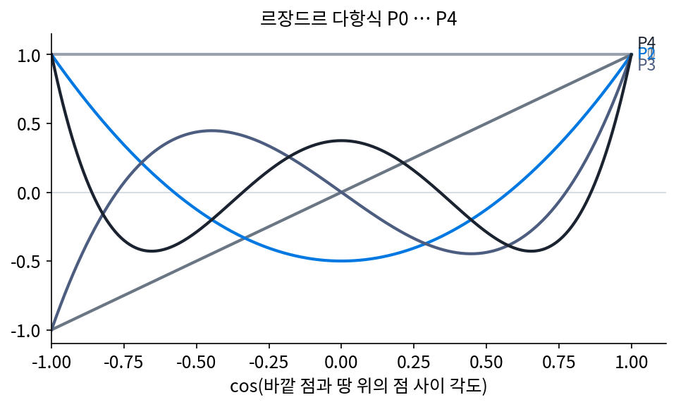
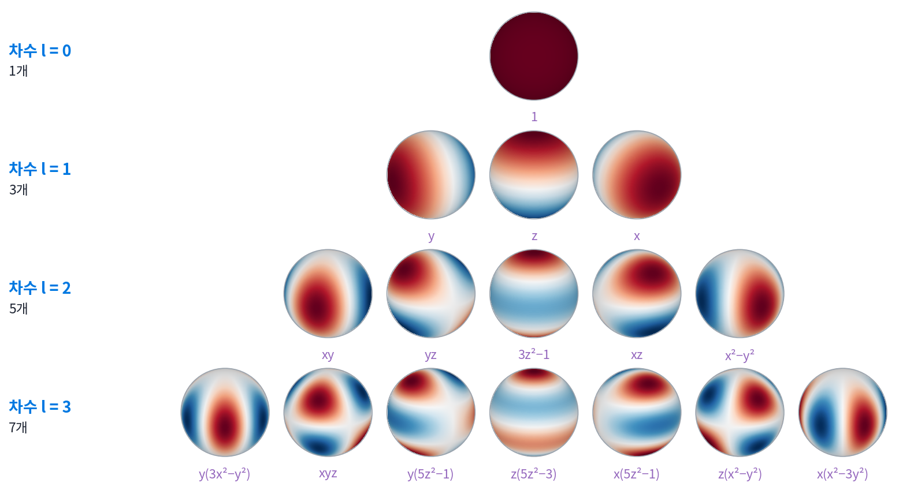
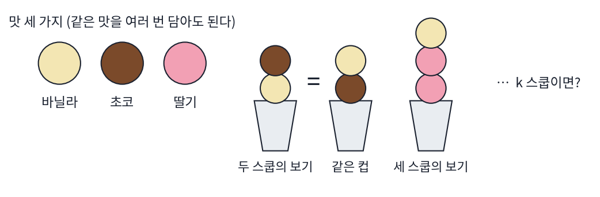
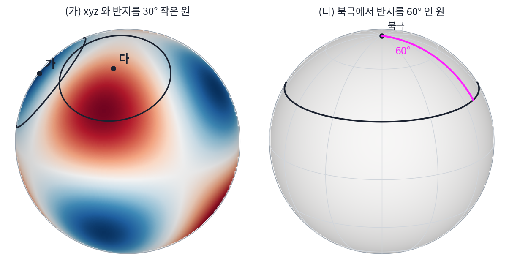
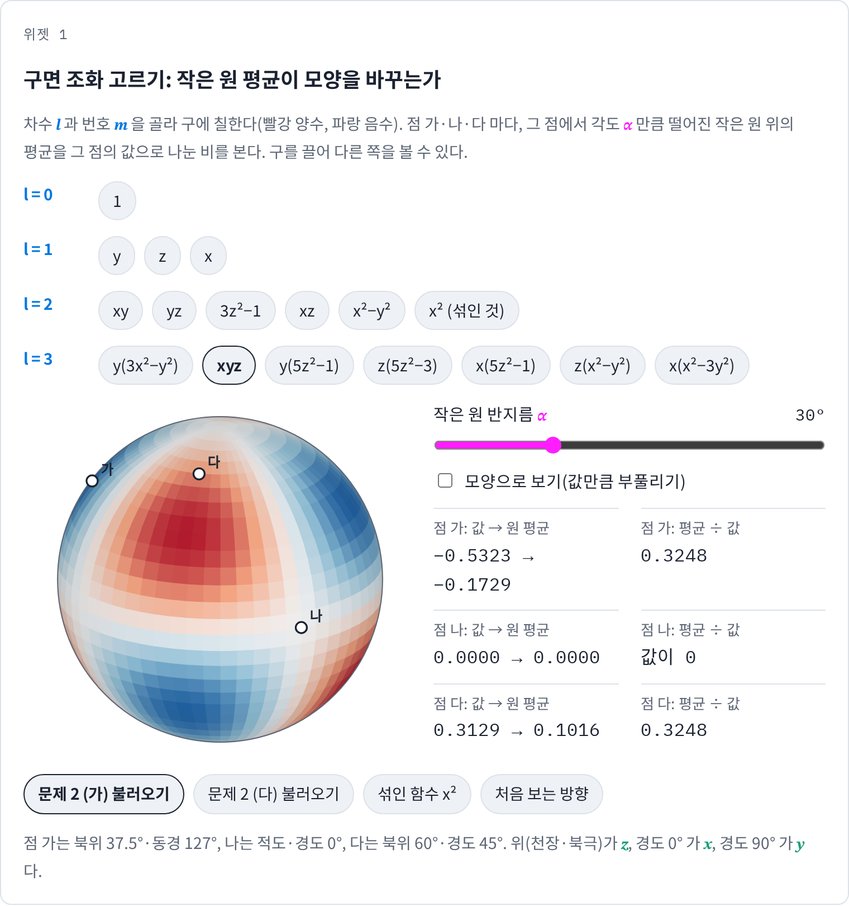
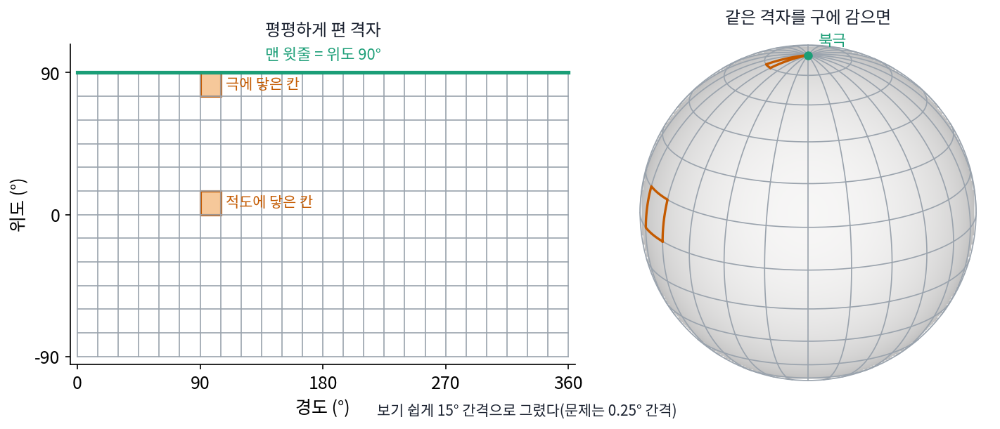

구면 조화: 구 위의 푸리에
이 장의 물음
신호를 한 칸 밀어 넣어도 똑같이 작동하는 필터는 모두 사인·코사인 물결을 고유 벡터로 가졌다(평행이동 대칭). 물결 하나를 넣으면 같은 물결이 크기만 바뀌어 나오므로, 신호를 물결로 나눠 두면 필터는 물결마다 수 하나를 곱하는 일이 된다. 대칭을 모은 것(군)을 바꾸면 그 대칭에 맞는 「푸리에」도 바뀌어서, 그림을 90°씩 돌리는 대칭에는 점 네 개짜리 이산 푸리에 변환이 그 노릇을 했다.
그런데 값이 놓인 바탕이 줄이나 바둑판이 아니라 공의 겉면인 신호가 많다. 지구 표면의 기온, 밤하늘의 밝기, 방 한가운데에서 방향마다 들어오는 빛의 세기가 그렇다. 지구본을 위도·경도로 펴서 평평한 지도로 만들면 바둑판의 푸리에를 쓸 수 있을 것 같다. 하지만 펴는 순간 북극 한 점이 지도 맨 윗줄 전체로 늘어나고, 지도 맨 위와 맨 아래는 실제로는 지구 반대편이다. 구에는 구에 맞는 물결이 따로 있어야 하지 않을까?
ML에서도 같은 바탕이 나온다. 사진 수십 장으로 3차원 장면을 다시 짓는 모델은 공간에 흩뿌린 작은 덩어리마다 「어느 방향에서 보면 무슨 색인가」를 숫자 몇 개로 적어 둔다. 분자의 에너지를 예측하는 모델은 분자를 어떻게 돌려 놓아도 같은 답을 내야 하는데, 두 모델 모두 방향의 함수를 다룬다.
이 장은 다음 물음에 차례로 답한다.
- 구 위에서 사인·코사인 노릇을 하는 함수는 무엇일까? 출렁임이 같은 함수는 몇 개씩 있을까?
- 방향마다 다른 밝기를 숫자 몇 개로 적을 수 있을까? 몇 개면 충분한지는 무엇이 정할까?
- 구를 돌리면 그 숫자들은 어떻게 바뀌고, 무엇이 그대로 남을까?
구면 조화: 작은 원 평균이 모양을 바꾸지 않는 함수
날씨 지도를 매끈하게 다듬고 싶다고 하자. 관측소마다 잰 기온에는 노이즈가 섞여 있으니, 각 지점의 값을 그 둘레 일정한 거리에 있는 지점들의 평균으로 바꾼다. 서울의 값은 서울에서 300 km 떨어진 원 위의 평균으로, 남극 기지의 값은 그 기지에서 300 km 떨어진 원 위의 평균으로 바꾼다. 어디서나 같은 규칙을 쓰므로 지구본을 어떻게 돌려 놓고 해도 결과가 같다. 줄 위의 이웃 평균은 사인 물결을 모양 그대로 두고 크기만 줄였는데, 구 위의 이 평균에도 모양을 그대로 두는 무늬가 있을까? 있다면 그 무늬가 구의 「물결」일 것이다.
역사: 행성의 모양과 바깥 점까지의 거리
구 위의 물결은 기온이 아니라 중력에서 처음 나왔다. 18세기 학자들은 지구와 행성이 완전한 공이 아니라 적도 쪽으로 조금 부푼 회전 타원체라는 것을 알았고, 그런 덩어리가 바깥의 한 점을 얼마나 세게 끄는지 계산하려 했다. 점 하나와 덩어리의 모든 조각 사이의 거리를 하나하나 적분해야 하는 일이라 어려웠다.
르장드르(Adrien-Marie Legendre)는 1780년대 초 파리 왕립 과학원에 낸 논문 「균질한 회전 타원체의 인력에 관하여」(1785년 인쇄)에서, 바깥 점까지의 거리의 역수를 두 점 사이 각도의 코사인에 대한 다항식들로 펼쳤다. 지금 「르장드르 다항식」이라 부르는 것이다. 같은 무렵 라플라스(Pierre-Simon Laplace)도 1784년 과학원에서 읽은 「회전 타원체의 인력과 행성의 모양에 관한 이론」(과학원 논문집 1782년 권, 1785년 인쇄)에서 같은 함수들을 썼다. 누가 먼저인지를 두고 말이 엇갈렸지만, 이 다항식에는 르장드르의 이름이 붙었다. 이 펼침 덕에 덩어리의 인력은 「각도에 따라 얼마나 출렁이는 성분이 얼마만큼 있나」의 합이 되었다. 공에서 멀어질수록 빨리 출렁이는 성분일수록 더 빨리 약해지므로, 멀리서는 앞의 몇 항만 남는다.

이 함수들을 구 위의 어느 방향으로나 쓸 수 있게 넓힌 것이 오늘의 구면 조화다. 「구면 조화(spherical harmonics)」라는 이름은 톰슨(William Thomson, 뒤의 켈빈 경)과 테이트(Peter Guthrie Tait)가 1867년 『자연철학 논고』에서 처음 쓴 것으로 알려져 있다(2차 자료 기준이고, 원문은 확인하지 못했다).

바깥 점이 끌리는 힘이면 덩어리를 작은 조각 백만 개로 쪼개서 컴퓨터로 다 더하면 되잖아요.

그 덧셈을 손으로 해야 했어요. 손으로 끝까지 했다고 쳐도 숫자 하나가 나와요. 무엇에 대한 숫자죠?

음, 바깥 점 하나에 대한 거요. 점을 옮기면 처음부터 다시 더해야 하고… 덩어리가 얼마나 부풀었는지를 바꿔도 다시 해야 하네요.

그런데 그 부푼 정도가 당시에는 측량대를 보내 다투던 값이었어요. 18세기 전반까지도 지구가 적도 쪽으로 부풀었는지 극 쪽으로 길쭉한지를 놓고 학자들이 갈렸거든요. 그래서 숫자 하나가 아니라 「모양이 이만큼 부풀면 힘이 이렇게 바뀐다」는 식이 필요했어요.

아, 모양을 바꿀 때마다 조각을 다 더할 수는 없으니까, 펼친 항 몇 개로 끝내야 했겠네요.

그런데 함수를 정해진 함수들의 합으로 펼친다는 건 푸리에 급수에서 배운 생각이잖아요. 르장드르는 그걸 어디서 가져왔어요?
푸리에가 열 전도 논문을 과학원에 낸 것이 1807년이에요. 르장드르의 논문보다 스무 해 남짓 뒤죠. 르장드르는 「함수를 물결로 나눈다」는 말 없이, 1/거리를 각도의 코사인으로 펼치는 계산에서 이 다항식들을 얻었어요.

그럼 르장드르 다항식이 구 위에서 하는 일은 뭘까요? 줄 위의 사인 물결처럼, 이웃 평균을 내도 모양이 그대로 남는 무늬일까요?
작은 원 평균을 직접 해 보면
손으로 계산할 수 있게 지구를 반지름 1인 공으로 놓고, 방향을 길이 1인 벡터 (x, y, z)로 적는다. z는 북극 쪽, x는 경도 0°, y는 경도 90° 쪽이다. 극에서도 값이 하나로 정해지기 때문에 위도·경도 대신 x, y, z를 쓴다(북극의 경도는 정할 수 없지만 북극의 x, y, z는 (0, 0, 1) 하나다).
구 위의 함수 몇 개에 대해, 점 세 곳에서 「반지름 30° 작은 원 위의 평균」을 그 점의 값으로 나눠 보았다. 점 가는 북위 37.5°·동경 127°(서울쯤), 나는 적도·경도 0°, 다는 북위 60°·경도 45°다.
| 함수 | 점 가 | 점 나 | 점 다 |
|---|---|---|---|
| 1 (어디서나 같은 값) | 1.0000 | 1.0000 | 1.0000 |
| z | 0.8660 | (값이 0) | 0.8660 |
| x | 0.8660 | 0.8660 | 0.8660 |
| 3z² − 1 | 0.6250 | 0.6250 | 0.6250 |
| x² − y² | 0.6250 | 0.6250 | (값이 0) |
| x² | 1.1733 | 0.7500 | 1.6250 |
상수, z, x, 3z² − 1, x² − y²는 어느 점에서 재도 비가 같다. 평균을 내면 모든 점의 값에 같은 수가 곱해지니, 무늬의 모양은 그대로이고 크기만 준다. x²은 다르다. 점마다 비가 1.17, 0.75, 1.63으로 제각각이니 평균을 내면 무늬의 모양이 바뀐다. 2차 단항식인데 왜 모양이 바뀌는지는 아래 문제 2에서 따진다.
곱해지는 수에도 규칙이 있다. z와 x는 0.8660 = cos 30°이고, 3z² − 1과 x² − y²는 0.6250 = (3 cos² 30° − 1)/2다. 역사 소절에서 본 르장드르 다항식 P1과 P2에 cos 30°를 넣은 값이다. 모양을 지키는 1차 함수(z, x)는 P1을, 모양을 지키는 2차 함수(3z² − 1, x² − y²)는 P2를 곱받는다.
원을 아주 작게 줄이면 무엇이 남을까? 평균과 그 점의 값의 차이를 α²/4로 나누면, 원의 반지름 α가 0으로 갈 때 z는 −2, 3z² − 1은 −6, z(5z² − 3)은 −12에 다가간다(α = 1° 에서 −1.9999, −5.9994, −11.9974). 이렇게 작은 원 평균이 그 점의 값에서 벗어나는 정도를 재는 연산을 구의 라플라시안 ΔS라 한다(줄 위에서 이웃 평균과 자기 값의 차이가 2계 도함수가 되는 것과 같은 계산이다).
구의 라플라시안을 해도 모양이 그대로이고 수 하나만 곱해지는 함수, 곧 구의 라플라시안의 고유 함수를 구면 조화 (구의 라플라시안의 고유 함수 / spherical harmonics)라 한다. 「조화」는 라플라시안이 0인 함수를 부르는 「조화 함수」에서 온 이름이고, 음악의 화음과는 상관이 없다. 곱해지는 수 λ = −l(l + 1)의 l을 차수라 부르는데, 차수는 무늬가 구를 한 바퀴 도는 동안 몇 번 출렁이는가를 센다. 구면 조화를 x, y, z의 다항식으로 적으면 차수는 그 다항식의 차수와 같다(최적화에서 말하는 1차·2차 방법의 「차수」와는 다른 말이다).
차수 l의 구면 조화는 몇 개일까? x, y, z로 만드는 l차 단항식은 x, y, z 세 글자에서 중복을 허락해 l개를 고르는 수만큼 있다. l = 2면 x², y², z², xy, yz, zx 여섯 개다. 그런데 구 위에서는 x² + y² + z²이 늘 1이라서 그 조합은 상수(차수 0)일 뿐 새 함수가 아니다. 그래서 하나를 빼면 다섯 개가 남는다. 일반적으로는 l차 단항식 수에서 (l − 2)차 단항식에 x² + y² + z²을 곱한 수를 빼고, 단항식 수의 차이가 늘 2l + 1이다. 차수 0은 1개, 1은 3개(y, z, x), 2는 5개, 3은 7개이고, 차수 l까지 모두 모으면 (l + 1)²개다. 다르게 적힌 무늬가 같은 차수에 여럿인 것은, 구에는 정해진 방향이 없어서 한 무늬를 돌려 놓은 것들이 모두 같은 λ를 갖기 때문이다.

ML에서: 구 위의 날씨를 구면 조화로 계산하는 신경망
날씨 예보 신경망은 지구 전체의 기온·바람·기압을 위도·경도 격자에 담아 몇 시간 뒤의 격자를 내놓는다. 평평한 그림에 쓰던 푸리에 신경 연산자는 격자를 2차원 푸리에 변환으로 바꾼 뒤 주파수마다 배운 수를 곱한다. 보네프(Boris Bonev)와 동료들의 구면 푸리에 신경 연산자(2023)는 이 방법이 구 위의 자료를 평평하다고 보고 계산하는 탓에 가짜 무늬가 생기고 무늬가 지나치게 뭉개진다고 짚었다. 그래서 2차원 푸리에 변환 자리에 구면 조화 변환을 넣었다. 구 위의 작은 원 평균이 차수마다 수 하나를 곱하는 일이었듯, 구를 어떻게 돌려 놓고 해도 결과가 같은 연산은 모두 차수마다 수를 곱하는 일이 된다. 이렇게 만든 모델은 6시간 스텝을 1,460번 이어 붙여 1년치 대기를 굴려도 무너지지 않았다고 논문은 보고했다. 격자 점과 계수가 각각 몇 개인지는 아래 문제 3에서 센다.
문제 1. 아이스크림 세 맛
아이스크림 가게에 바닐라, 초코, 딸기 세 맛이 있는데, 컵에 담는 순서는 따지지 않고 같은 맛을 여러 번 담아도 된다. (가) 두 스쿱 컵은 몇 가지인가? (나) 세 스쿱 컵은? (다) k 스쿱 컵의 가짓수를 k 로 적어라.

(가)는 하나씩 적어 볼게요. 서로 다른 맛 둘을 고르는 게 세 쌍, 같은 맛 두 스쿱이 세 가지라 6가지요. (나)도 같은 식으로 적어 보니 10가지예요.
스쿱이 열 개쯤 되면 하나씩 적기 힘들겠죠. (다)는 어떻게 셀까요?
음, 맛 순서를 바닐라, 초코, 딸기로 정해 두고, 스쿱을 세 칸에 나눠 담는다고 보면 어떨까요?
칸과 칸 사이에는 무엇이 있죠?

칸막이 두 개요. 스쿱 k개와 칸막이 두 개를 한 줄에 놓으면, (k + 2)개 자리 가운데 칸막이 자리 둘을 고르는 거네요. (k + 2)(k + 1)/2요.
k = 3 이면 5 × 4 ÷ 2 = 10. 내가 적은 거랑 맞네. 네 스쿱이면 15가지고.
이 셈이 구면 조화와는 어떻게 이어질까요?

맛을 x, y, z로 바꾸면 k 스쿱 컵이 k차 단항식이에요. 두 스쿱 여섯 가지가 x², y², z², xy, yz, zx고요. 구 위에서는 x² + y² + z²이 늘 1이라 그중 하나가 빠지고요.
그럼 일반적으로는 l차 단항식 (l + 2)(l + 1)/2개에서, x² + y² + z²을 곱해 만든 (l − 2)차 쪽 l(l − 1)/2개를 빼면 되겠네. 빼 보면 2l + 1이야. 본문에서 센 차수마다의 개수가 이거였어.
문제 2. xyz 와 x², 그리고 큰 원
(가) xyz 는 구면 조화인가? 점 가(북위 37.5°·동경 127°)에서 반지름 30° 작은 원 평균 ÷ 그 점의 값을 구하고, 다른 점에서도 같은지 말하라. (나) x² 는 왜 구면 조화가 아닌가? x² 를 구면 조화들의 합으로 적어라. (다) 3z² − 1 의 북극 값은 2 인데, 북극에서 반지름 60° 원 위의 평균은 얼마이고, 비는 얼마인가? (위젯 1의 「문제 2 (가)」「문제 2 (다)」 불러오기로 확인해 보자.)

(가)는 위젯에 넣어 보니 점 가에서 0.3248이고 점 다에서도 0.3248이에요. 점마다 같으니까 구면 조화네요. 차수는… 1차 곱하기 셋이라 3이요.
확인해 보면 P3(cos 30°) = (5 cos³ 30° − 3 cos 30°)/2 = 0.3248로 맞아. 차수 3이면 비가 P3(cos α)인 거지.
(나)는요?
xyz가 3차 단항식이라 차수 3이었으니까, x²도 2차 단항식이라 차수 2 구면 조화일 것 같아요. 비는 P2(cos 30°) = 0.625가 나오겠죠.
본문 표의 x² 줄을 봐요.

1.17, 0.75, 1.63이요. 점마다 다르네요. 차수 2였으면 셋 다 0.625여야 하는데요. xyz는 됐는데 x²은 왜 안 되죠?
구 위에서 x²과 늘 함께 다니는 식이 있었죠?
x² + y² + z² = 1이요. 아, 그럼 x² 안에 상수가 숨어 있을 수 있겠네요.
그 상수를 떼어 내 볼래요?
x² = (x² − 1/3) + 1/3이요. x² − 1/3은 3x² − 1을 3으로 나눈 거라 3z² − 1을 돌려 놓은 꼴이니까 차수 2, 1/3은 차수 0이에요.

그럼 평균을 내면 어떻게 돼?
두 차수에 0.625배와 1배가 따로 곱해져. 그래서 모양이 바뀌어. xyz에는 그렇게 숨은 낮은 차수가 없었던 거고.
(다)는 어때요? 평균은 크기를 줄이기만 한다고 했죠.

북극에서 60° 떨어진 원은 위도 30°선이에요. 거기서 z = 0.5라서 3 × 0.25 − 1 = −0.25. 원 위가 다 같은 값이라 평균도 −0.25예요. 비는 −0.125. 부호가 뒤집혔어요!
P2(cos 60°) = (3 × 0.25 − 1)/2 = −0.125니까 계산은 맞아. 그런데 「크기를 줄이기만 한다」랑은 어긋나네.
원 위의 점들이 3z² − 1의 어느 부분을 지나는지 봐요.
원이 커지면 북극의 빨간 봉우리를 벗어나서 파란 띠 위를 지나가요. 아, 「작은 원」이라는 조건이 있어야 「크기만 준다」가 맞는 거였어요. 모양을 지킨다는 건 그대로고, 곱해지는 수가 음수가 될 수 있을 뿐이고요.

그래요. 어떤 크기의 원이든 구면 조화는 모양을 지켜요. 곱해지는 수 Pl(cos α)가 작은 원에서는 1에 가깝고, 원이 커지면 0을 지나 음수로도 가요. 차수가 높을수록 더 작은 원에서 그렇게 되고요.

사인 물결을 반 주기만큼 떨어진 두 점으로 평균하면 0, 한 주기 넘게 떨어진 점들로 평균하면 부호가 바뀌던 거랑 같네. 평균 내는 폭이 물결보다 넓어지면 곱해지는 수가 0을 지나 음수가 되는 거지.
위젯 1에서 점 가와 점 다의 비를 직접 읽어 보고, 반지름을 바꿔 가며 비가 0을 지나는 자리도 찾아봐요.

문제 3. 위도·경도 0.25° 격자
날씨 모델이 지구를 위도·경도 0.25° 간격 격자에 담는다. 위도는 −90° 부터 90° 까지 양 끝을 넣고, 경도는 0° 부터 359.75° 까지다. (가) 격자 점은 몇 개인가? (나) 적도에 닿은 0.25° × 0.25° 칸과 극에 닿은 칸의 넓이는 몇 배 차이인가? 북극에는 격자 점이 몇 개 겹치는가? (다) 차수 720 까지의 구면 조화 계수는 몇 개인가? 이 격자를 평평한 그림처럼 보고 2차원 푸리에 변환을 하면 무엇이 잘못되는가?

(가)는 위도가 −90°부터 90°까지 양 끝을 넣으니까 180 ÷ 0.25 + 1 = 721줄, 경도는 360 ÷ 0.25 = 1440칸이야. 곱하면 1,038,240개.
(나)는 지구 반지름 6371 km로 계산해 볼게. 적도에 닿은 칸이 772.8 km², 극에 닿은 칸이 1.686 km²라서 458배야. 북극 줄 1440점은 다 같은 곳이고.
(다)는 차수 l까지 (l + 1)²개니까 721² = 519,841개. 격자 점의 절반쯤이네.
같은 신호를 적는데 숫자가 반으로 줄었네요. 그럼 평평한 2차원 푸리에 변환은 지도의 위 끝과 아래 끝을 어떻게 다루죠?
일단 2차원 이산 푸리에 변환은 그림이 가로로도 세로로도 되풀이된다고 봐요. 가로는 경도 359.75° 다음이 0°라 맞는데… 세로는 맨 윗줄(북극) 다음이 맨 아랫줄(남극)이 돼요. 북극 바로 옆이 남극이라고 보는 거네요.
북극 줄 자체는 어떻게 보일까요? (나)에서 센 것을 떠올려 봐요.

음, 1440칸이 실제로는 한 점인데, 평평한 계산은 서로 다른 1440곳으로 봐요. 그 줄의 값이 조금씩만 달라도 한 점 둘레에서 1440번 출렁이는 빠른 무늬로 읽을 수 있어요. 넓이가 458배 작은 칸에 숫자를 똑같이 쓰는 것도 낭비고요.
그래요. 위도·경도 격자는 저장하기 편한 꼴일 뿐이에요. 계산은 구의 대칭에 맞는 축, 구면 조화로 해야 극이 특별한 곳이 되지 않아요.